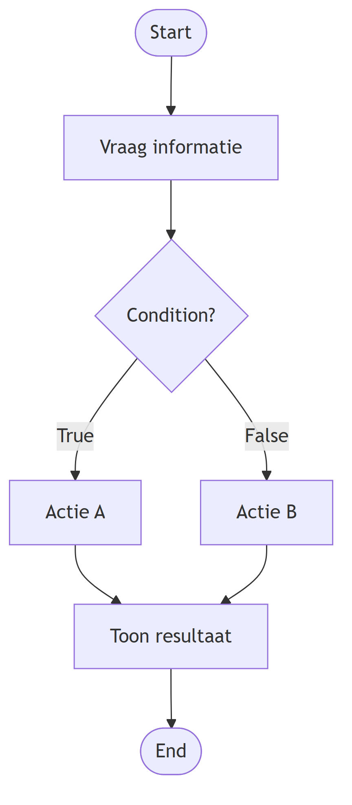

Basics
Pseudocode
Pseudocode is een manier om de logica van een oplossing in duidelijke stappen op te schrijven voordat je deze programmeert.
Je gebruikt gewone taal. De stappen moeten zo duidelijk zijn dat je kunt zien wat het programma moet doen, zonder al Python-syntax te schrijven.
Waarom pseudocode?
Een flowchart laat vooral goed zien:
- welke stappen er zijn;
- waar beslissingen worden genomen;
- welke routes door een algoritme mogelijk zijn.
Pseudocode beschrijft dezelfde oplossing als een geordende reeks instructies.
De beweging wordt daardoor:
Pseudocode helpt je dus om de stap van een visueel ontwerp naar code kleiner te maken.
Eén logische actie per stap
Een pseudocodestap beschrijft bij voorkeur één logisch onderdeel van het algoritme.
Niet:
Wel:
Daardoor kun je later per stap bepalen welke code nodig is.
Nummer de stappen
Geef de hoofdstappen een nummer:
Een nummer maakt het makkelijker om over een algoritme te praten.
Je kunt bijvoorbeeld zeggen:
Bij stap 2 neemt mijn programma nog niet de juiste beslissing.
Dezelfde stapnummers kunnen later ook helpen bij testen en debugging.
Beslissingen beschrijven
Soms hangt een volgende stap af van een condition.
In pseudocode kun je zo'n beslissing in natuurlijke taal beschrijven:
1. Vraag de benodigde informatie
2. Controleer de situatie
2.1 Als de condition waar is, voer actie A uit
2.2 Anders, voer actie B uit
3. Toon het resultaat
De subnummers laten zien dat stap 2.1 en stap 2.2 bij dezelfde grotere stap horen.
Inspringing maakt structuur zichtbaar
Gebruik inspringing om zichtbaar te maken welke stappen binnen een beslissing horen.
Bijvoorbeeld:
1. Vergelijk twee waarden
2. Bepaal de uitkomst
2.1 Als de eerste waarde groter is, toon uitkomst A
2.2 Anders, toon uitkomst B
Zonder inspringing is minder duidelijk welke acties bij de beslissing horen.
Van flowchart naar pseudocode
Een flowchart en pseudocode kunnen dezelfde oplossing op twee verschillende manieren weergeven.
Een flowchart kan bijvoorbeeld deze structuur laten zien:

Dezelfde logica kan als pseudocode worden geschreven:
1. Vraag de benodigde informatie
2. Controleer de condition
2.1 Als de condition waar is, voer actie A uit
2.2 Anders, voer actie B uit
3. Toon het resultaat
De flowchart maakt vooral de routes zichtbaar.
De pseudocode maakt vooral de volgorde en bedoeling van de stappen zichtbaar.
Pseudocode is geen Python
Pseudocode beschrijft wat er moet gebeuren. Je hoeft nog niet te weten welke Python-syntax daarvoor nodig is.
Dus liever:
2. Controleer welke situatie geldt
2.1 Als situatie A geldt, voer actie A uit
2.2 Anders, voer actie B uit
dan:
In het tweede voorbeeld wordt de Python-oplossing al voorgeschreven. Dat is niet de bedoeling van pseudocode.
Pseudocode als comments in Python
Je kunt pseudocode direct als comments in een .py-bestand schrijven.
Eerst staat er bijvoorbeeld alleen:
# 1. Vraag de benodigde informatie
# 2. Controleer welke situatie geldt
# 2.1 Als situatie A geldt, voer actie A uit
# 2.2 Anders, voer actie B uit
# 3. Toon het resultaat
Daarna bouw je de Python-code bij je eigen stappen.
De pseudocode hoeft niet verwijderd te worden wanneer het programma werkt. Als de comments de bedoeling van de code beschrijven, blijven ze nuttige documentatie van je oplossing.
Goede pseudocode
Controleer je pseudocode voordat je gaat programmeren:
- beschrijft iedere stap één logisch onderdeel;
- staan de stappen in een logische volgorde;
- zijn de stappen genummerd;
- zijn onderdelen van beslissingen ingesprongen en waar nodig voorzien van subnummers;
- beschrijft de pseudocode wat er moet gebeuren zonder Python-syntax voor te schrijven;
- kun je vanuit de pseudocode uitleggen hoe jouw oplossing werkt?